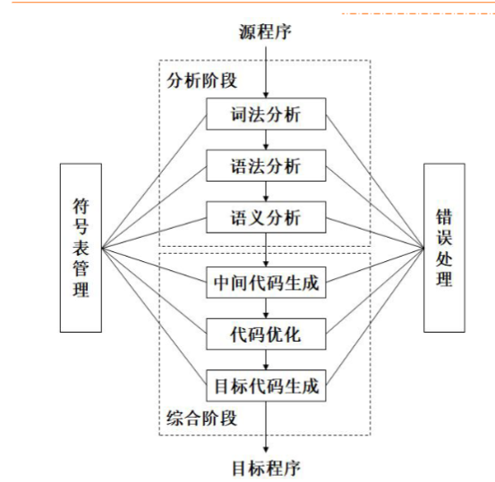
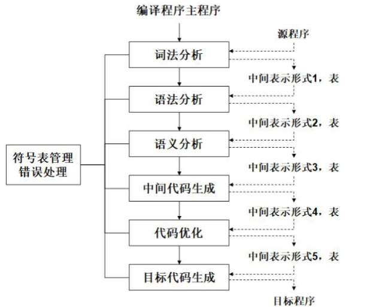

编译概述
翻译和解释
程序设计语言
程序设计语言可以分成两种：
- 低级语言：机器语言、符号语言、汇编语言
- 高级语言
翻译程序
扫面所输入的源程序，并将其转换为目标程序，或者直接将源程序之间翻译成结果。
翻译程序可以分成两个大类：
- 编译程序：将源程序翻译为目标程序
- 解释程序：直接执行源代码
一种有效的方法是：现将源程序转换为某种中间形式、然后对中间形式的程序解释执行。
编译的阶段和任务
编译可以被分成两个阶段。
分析阶段，更具源语言的定义，分析源程序。包括词法分析，语法分析和语义分析。
综合阶段，根据分析结果构造目标程序。包括中间代码生成、代码优化和目标代码生成等阶段。
符号表的管理。
错误诊断和处理。

分析阶段
词法分析
线性分析和扫描。
词法分析程序需要对构成源程序的字符串进行分析，识别出每个具有独立意义的单词，将其转换成记号，并组织为记号流。同时把需要存放的单词放到符号表，如变量名、标号、常量名等。
词法分析程序的工作依据就是构词规则，也称为模式。
对于空格、注释的处理和其他：
- 分隔单词的空格：被跳过
- 源程序中的注释：被跳过
- 识别出来的标识符需要放入符号表中
- 某些记号还需要具有属性值
语法分析
层次结构分析。
将记号流按照语言的语法结构层次的分组，形成语法短语。源程序的语法短语通过使用分析树表示。
语法分析的层次结构通过由递归的规则表示。
例：total := total + rate * 4的分析树如下所示：

语义分析
对于语法成分的意义进行检查分析。语法成分就是语法分析确定的层次结构。同时收集必要的信息：类型、作用域等。工作依据是语义规则。
语义分析的一个重要人物是完成类型检查。
综合阶段
中间代码生成
中间代码是一种抽象的机器程序。，具有易于产生和易于翻译为目标代码等的特点。中间代码可以拥有多种形式。
常用三地址代码作为中间代码。
代码优化
对于代码进行改进，占用空间少，运行速度快。
目标代码生成
目标代码是可重定位的机器代码，一般就是汇编语言代码。
目标代码生成涉及到两个重要的问题：
- 对程序中使用的每个变量指定存储单元
- 对变量进行寄存器分配
符号表管理
符号表管理是编译程序中的一项重要工作，需要记录在源程序中使用的标识符和每个标识符相关的各种属性信息。
符号表是由若干记录组成的数据结构，每个标识符都在表中有一条记录，记录的域是标识符的属性。要求可以快速在符号表中可以找到标识符的记录，并且可以存取数据。
标识符的各种属性是在编译的各个不同的阶段填入符号表的。
错误处理
在编译的各个阶段都可能检测到源程序中存在的错误。
在发现源程序中的错误之后，编译器还需要判断错误的位置和性质，同时进行适当的恢复。
编译有关的其他概念
前端和后端
前端：与源语言有关而与目标机器无关的部分。
前端包括词法分析、语法分析、符号表的建立、语义分析和中间代码的生成。与机器无关的代码优化工作和相应的错误处理工作和符号表操作也在前端完成。
后端：和目标代码有关的部分，进行目标代码的生成、与机器有关的代码优化，相应的错误处理和符号表操作。
划分前端和后端的优点：
- 便于编译程序的移植
- 便于编译程序的构造
遍
一遍：对源程序或者其中间形式从头到尾扫描一遍，并作相关的加工处理，生成新的中间形式或者目标程序。
编译程序的结构受到遍的影响。
典型的一遍扫描的编译程序如图所示：

典型的多遍编译程序如图所示：

将编译程序分遍的优点：
- 减少对于主存容量的要求
- 编译程序的结构清晰
- 优化工作更加充分，获得高质量的目标程序
- 为编译程序的移植创造条件
将编译程序分遍也增加了不少重复性的工作。
编译程序的伙伴工具
预处理器
进行宏处理、文件包含、语言扩充等的功能。
汇编程序
汇编语言用助记符表示操作码，用标识符表示存储地址。
最简单的汇编程序需要对输入进行两遍扫描：
- 找出表示存储单元的所有标识符，并将它们写入汇编符号表。在符号表中记录该标识符所对应的存储单元地址，此地址是在首次遇到该标识符的时候确定的。
- 把每个用助记符表示的操作码翻译为二进制表示的机器代码。将用标识符表示的存储地址翻译为汇编符号表中该标识符对应的地址。
汇编程序需要输出可重定位的机器代码，同时需要对哪些需要重定位的指令做出标记。
连接装配程序
将多个经过编译或者汇编的目标模块连接装配成一个完整的可执行程序。
可将连接装配程序分成两个程序：
- 连接编辑程序：扫描外部符号表，寻找所连接的程序段，根据重定位信息表解决外部引用和重定位，最终将中整个程序涉及的目标模块逐个调入内存并连接在一起，组合成一个待装入的程序。
- 重定位装配程序：把目标模块的相对地址转换为绝对地址。